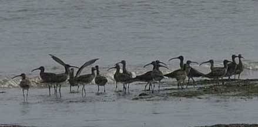
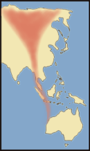
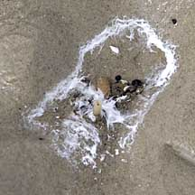
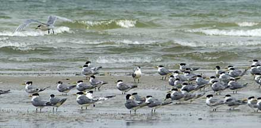
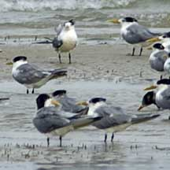
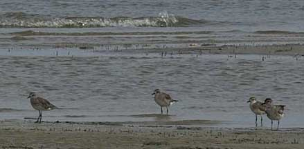
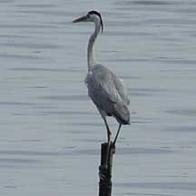

|
|
| vertebrates text index | photo index |
| Phylum Chordata > Subphylum Vertebrata > Class Aves |
| Shorebirds
and sea birds updated Oct 2016 Where seen? These rather drab but very interesting birds can be seen on and flying over our mudflats and sandflats especially during the migratory season of September to March. These are shorebirds visiting from afar. They are sometimes also called waders as they are often seen wading in water. |
 A group of whimbrels on the shore. Chek Jawa, Jan 07 |
|
|
Seabirds are those that hunt mainly fish on open waters or coastal
areas, rather than feeding on the mudflats like shorebirds. Some seabirds
are also migratory. Why do shorebirds migrate? Many shorebirds breed in the northern regions, some as far as the sub-Arctic. Summer in such places is short but hot, with the sun overhead almost 24 hours a day. During this season, plants and insects are plentiful. Shorebirds are among those that take advantage of this seasonal abundance to breed. Winter in such places, however, is sharsh. Thus shorebirds migrate southwards in autumn. In spring, most journey back north to their breeding grounds. On their long journeys, shorebirds depend on wetlands and intertidal flats such as Chek Jawa. Here they rest and refuel on 'fast food': high-energy food that can be harvested quickly. A chain of such wetland stopovers forms a flyway. Singapore is part of the East Asian-Australasian Flyway. Often, migratory birds must fly non-stop between such stopovers as there are no suitable habitats for them in between. The destruction of such 'stepping stones' can affect the continued existence of these marvellous birds. |
 Route a migrating shorebird might take on the East Asian- Australasian Flyway |
| Role
of shorebirds: Shorebirds
not only feed on the shores but also give back to the shores. Studies
have shown that shorebird poop helps seagrasses to grow and heal
damaged seagrass meadows. Status and threats: The Red List of threatened animals of Singapore include resident seabirds such as the Black-naped tern (Sterna sumatrana) and Little tern (Sterna albifrons) which are listed as 'Endangered', and the Great-billed heron (Ardea sumatrana) which is listed as 'Critically Endangered'. They are primarily threatened by habitat loss as well as human disturbance of their nesting sites. |
 Bird poop on the shore. Chek Jawa, Jan 11 |
|
 Seabirds resting on the sand bars. Chek Jawa, Jan 11 |
 Lesser crested-terns. Chek Jawa, Jan 11 |
|
 Pacific golden plovers. Chek Jawa, Jan 07 |
 Grey heron. Kranji Nature Trail, Dec 09 |
|
| Shorebirds on Singapore shores |
| Photos of shorebirds for free download from wildsingapore flickr |
| Distribution in Singapore on this wildsingapore flickr map |
|
Links
References
|